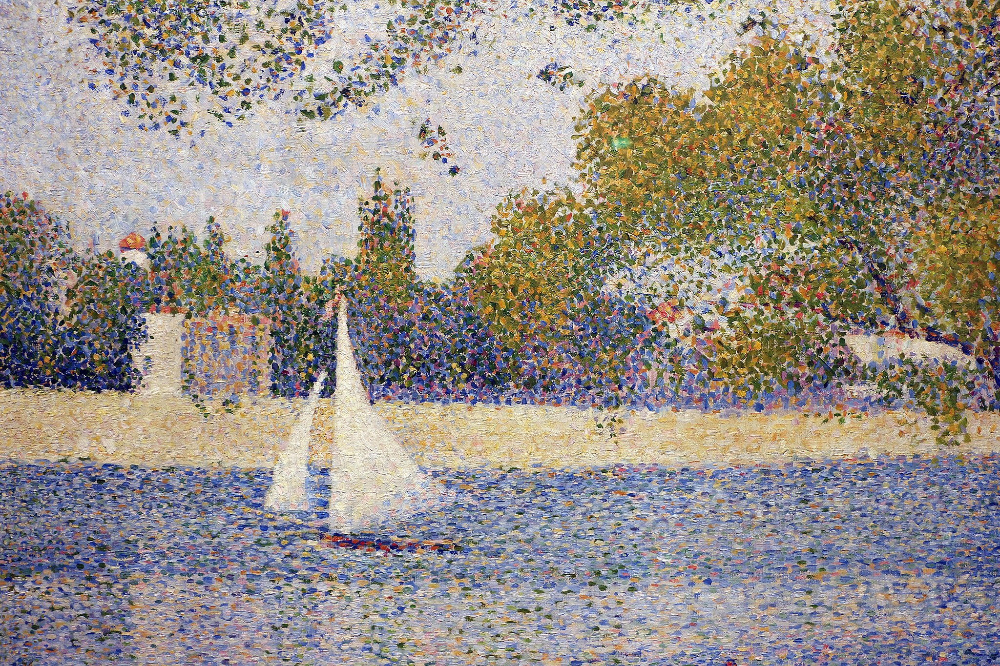
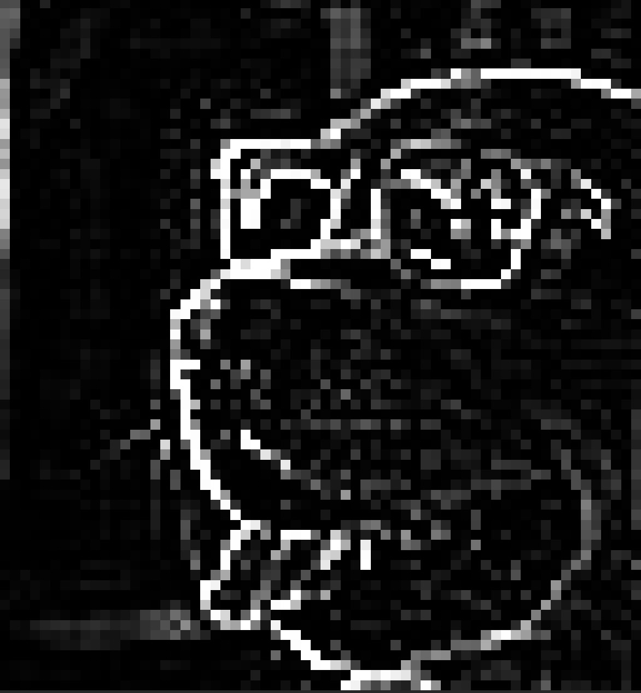

Lecture 6 — Convolutional neural networks
August 10, 2026
I will release a midterm assignment this Thursday
Should be submitted by Tuesday 18 August at 9am
≈ 5 min · shout it out
Not everything is easily quantified.
For social scientists: protest crowds, ballot tallies, satellite views of land use, MRI scans, facial expressions are all relevant data, but hard to put in a spreadsheet.
Strip away the rendering: an image is a tensor of numbers.

A surprising amount of computer vision is about reasoning with — and over — these grids of numbers.
Grayscale
Colour (RGB)
Note
RGB is one of many ways to encode colour. It’s standard because it mimics human trichromatic vision. Other encodings (HSV, CMYK, Lab) exist.
Suppose we treat the image as a vector of features
Can you fit a random forest on a 256 \times 256 RGB image?
Yes!
But for richer images:
Using week 1’s architecture on the same image:
Wildly wasteful -— and trains badly without enormous data
1. Parameter sharing
Learn and apply a filter that scans across the space of the image.
2. Locality
Only look at small patches at a time
Translation invariance is possible by virtue of these two properties: if a filter learns to detect an edge, it can do so anywhere in the image.
(Though cf. Biscione & Bowers (2021) for subtleties — CNNs aren’t perfectly translation-invariant, but they learn to be close.)
Given an image \mathbf{A} and a small kernel \mathbf{K}:
Note
Convolution vs cross-correlation. Strictly, “convolution” flips the kernel first. In deep learning we always use cross-correlation but call it convolution.
Image and kernel: \mathbf{A} = \begin{bmatrix} 1 & 2 & 3 \\ 4 & 5 & 6 \\ 7 & 8 & 9 \end{bmatrix}, \quad \mathbf{K} = \begin{bmatrix} 1 & 0 \\ 0 & 1 \end{bmatrix}
The kernel slides over the image (2×2 window). At each position, compute \sum K_{ij} A_{ij}:
Continuing:
Result: \mathbf{A} \circledast \mathbf{K} = \begin{bmatrix} 6 & 8 \\ 12 & 14 \end{bmatrix}
where \circledast denotes the convolution operator.
Notice the shrinkage: the 3 \times 3 input became a 2 \times 2 output. A k \times k kernel on an H \times W image gives output size (H-k+1) \times (W-k+1) — unless we pad the image with zeros.
Tip
For a 3×3 kernel with stride 1 and padding 1, the output has the same height and width as the input. This “same” padding is what most modern CNNs use.
The output-size formula
For an input of height H, kernel size k, padding P and stride s:
\text{out} = \left\lfloor \frac{H + 2P - k}{s} \right\rfloor + 1
(the same formula gives the output width).
Our worked examples so far were grayscale — one channel. Real photos have three.
On an RGB input, a “3×3” kernel is a 3 \times 3 \times 3 block of weights:
Parameter count for one kernel: 3 \times 3 \times 3 = 27 weights +\ 1 bias = 28.
Note
The output is still a single feature map — the channels are summed away. The same rule holds deeper in the network: a 3×3 kernel over a 16-channel input has 3 \cdot 3 \cdot 16 + 1 = 145 parameters.
Take one kernel position. Each channel has a 3 \times 3 patch under the kernel’s matching slice — multiply element-wise (\odot) and sum:
Red
\small \begin{bmatrix} 2 & 0 & 1 \\ 0 & 1 & 0 \\ 1 & 0 & 2 \end{bmatrix} \odot \begin{bmatrix} 1 & 0 & 0 \\ 0 & 1 & 0 \\ 0 & 0 & 1 \end{bmatrix}
Sum: 2 + 1 + 2 = 5
Green
\small \begin{bmatrix} 0 & 1 & 0 \\ 1 & 0 & 1 \\ 0 & 1 & 0 \end{bmatrix} \odot \begin{bmatrix} 0 & 1 & 0 \\ 1 & 0 & 1 \\ 0 & 1 & 0 \end{bmatrix}
Sum: 1 + 1 + 1 + 1 = 4
Blue
\small \begin{bmatrix} 1 & 0 & 1 \\ 0 & 2 & 0 \\ 1 & 0 & 1 \end{bmatrix} \odot \begin{bmatrix} 0 & 0 & 0 \\ 0 & 1 & 0 \\ 0 & 0 & 0 \end{bmatrix}
Sum: 2
Add the channel sums, then the bias (b = 1): 5 + 4 + 2 + 1 = 12. One output pixel. Slide the kernel one position and do it again.
Sharpen \small \begin{bmatrix} 0 & -1 & 0 \\ -1 & 5 & -1 \\ 0 & -1 & 0 \end{bmatrix}
Box blur \small \begin{bmatrix} \tfrac{1}{9} & \tfrac{1}{9} & \tfrac{1}{9} \\ \tfrac{1}{9} & \tfrac{1}{9} & \tfrac{1}{9} \\ \tfrac{1}{9} & \tfrac{1}{9} & \tfrac{1}{9} \end{bmatrix}
Edge detect \small \begin{bmatrix} -1 & -1 & -1 \\ -1 & 8 & -1 \\ -1 & -1 & -1 \end{bmatrix}
These are hand-designed kernels from classical image processing. They produce visibly recognisable effects.
In a CNN we don’t hand-design them. Instead, we learn them, just like any other weights, via backpropagation.
\circledast edge-detect kernel =

Tip
What the network learns is rarely a “pure” edge detector. Instead it converges on dozens of specialised kernels that mix sharpening, blurring, contrasting, colour selection — whatever turns out to be useful for reducing the loss.
A 3×3 kernel “looks for” a specific local pattern. If the pattern appears anywhere in the image, the kernel’s output is high at that location.
The same 9 weights detect that pattern in the corner, in the centre, at the edge — anywhere.
This is the trick that takes us from 25 million weights to ≈30 weights per filter.
Stop & check
Try — 60 seconds in pairs
A 28×28 grayscale image (MNIST). A single 3×3 convolution layer with 32 filters and “same” padding.
How many parameters does that layer have? How big is the output?
Answer Each filter has 3 \times 3 = 9 weights + 1 bias = 10 parameters. With 32 filters, that’s 320 parameters.
Output shape: 28 \times 28 \times 32 — same spatial size, but now 32 channels (feature maps), one per filter.
Compare to the fully-connected version, which would have 784 \cdot 32 = 25{,}088 weights (78× more). And that’s just for the first layer.
≈ 10 min · in pairs
Design challenge
Your task: design a 3×3 kernel that detects vertical edges in a grayscale image.
That is, the output should be large (positive) where there’s a strong vertical line of dark-to-light transition, and zero elsewhere.
Steps
A vertical-edge kernel
\mathbf{K} = \begin{bmatrix} -1 & 0 & 1 \\ -1 & 0 & 1 \\ -1 & 0 & 1 \end{bmatrix}
On the test patch
Each row contributes (0)(-1) + (128)(0) + (255)(1) = 255. Sum the three rows:
\text{output} = 255 + 255 + 255 = (255 - 0) \times 3 = 765.
On an all-128 patch Each row gives (128)(-1) + (128)(0) + (128)(1) = 0 → output = 0. Correctly zero.
Tip
This is the Prewitt operator, a classical edge detector.
This is the basic recipe behind LeNet (1989), AlexNet (2012), and most CNNs since.
A single kernel can’t detect every useful feature. Stack many of them:
Channels increase over successive convolutions. RGB images start at 3 channels. After conv layer 1 you might have 32. After layer 2: 64.
Kernels start as random numbers
Gradient descent updates each kernel weight to reduce the loss
Whatever local patterns help the network classify, the kernels converge towards
What do they converge to?
Zeiler & Fergus (2014) projected each layer’s activations back to pixel space to see what “excites” them:
Early layers
Later layers
Each layer builds its features from the layer below: edges combine into textures, textures into parts, parts into objects. This sequence appears from training alone.
After convolution, we pool the results to shrink the spatial dimensions:
Why pool?
Feature map (4 \times 4), pool size 2 \times 2, stride 2:
\begin{bmatrix} \color{#C9322B}{1} & \color{#C9322B}{3} & \color{#1A6FB4}{6} & \color{#1A6FB4}{4} \\ \color{#C9322B}{9} & \color{#C9322B}{3} & \color{#1A6FB4}{1} & \color{#1A6FB4}{5} \\ \color{#2F8F6C}{5} & \color{#2F8F6C}{5} & \color{#C58A12}{8} & \color{#C58A12}{2} \\ \color{#2F8F6C}{3} & \color{#2F8F6C}{1} & \color{#C58A12}{5} & \color{#C58A12}{6} \end{bmatrix} \quad \rightarrow \quad \begin{bmatrix} \color{#C9322B}{9} & \color{#1A6FB4}{6} \\ \color{#2F8F6C}{5} & \color{#C58A12}{8} \end{bmatrix}
Each colour group is one pooling window. Keep only the max in each.
Input: 32 \times 32 \times 3 image (CIFAR-style).
| Layer | Output shape | Parameters (incl. biases) |
|---|---|---|
| Conv 1 (3×3, 16 filters, padding 1) | 32 \times 32 \times 16 | (3 \cdot 3 \cdot 3 + 1)\cdot 16 = 448 |
| ReLU | 32 \times 32 \times 16 | 0 |
| MaxPool (2×2) | 16 \times 16 \times 16 | 0 |
| Conv 2 (3×3, 32 filters, padding 1) | 16 \times 16 \times 32 | (3 \cdot 3 \cdot 16 + 1)\cdot 32 = 4{,}640 |
| ReLU + MaxPool | 8 \times 8 \times 32 | 0 |
| Flatten | 1 \times 2048 | 0 |
| Linear (2048 → 64) | 1 \times 64 | 2048 \cdot 64 + 64 = 131{,}136 |
| ReLU + Linear (64 → 10) | 1 \times 10 | 64 \cdot 10 + 10 = 650 |
| Softmax | 1 \times 10 | 0 |
Note
Every row includes a bias term (the +1 per filter, the +64 and +10 per linear layer).
Notice also that most parameters live in the first fully-connected layer (131{,}136); the convolutions are compact as a result of parameter sharing.
How much of the image feeds into any given unit in a feature map?
The receptive field of a unit is the patch of the input that can affect its value.
After one 3 \times 3 convolution, each unit sees a 3 \times 3 patch.
Stack a second 3 \times 3 convolution in the next layer, the unit sees 5 \times 5
The third layer then is 7 \times 7 etc.
For stride-1 convolutions with kernel size k:
\text{receptive field} = \text{layers} \times (k - 1) + 1
Check: 2 \times (3 - 1) + 1 = 5; \ 3 \times (3 - 1) + 1 = 7.
Try it yourself How many stacked 3 \times 3 layers does a unit need to see a 15 \times 15 patch?
Answer Solve \text{layers} \times (3 - 1) + 1 = 15: \text{layers} = 14 / 2 = 7.
VGG (2014) chose small kernels
Two ways to see a 7 \times 7 patch (single channel, biases included):
Fewer parameters and more non-linearity.
Stacked convolutions grow the receptive field slowly — seven layers to reach 15 \times 15.
Pooling speeds this up. After a 2 \times 2 stride-2 pool, each pixel in the pooled map spans two pixels of the map below, so every later layer’s view doubles.
Receptive field along a conv–pool–conv–pool–conv chain (all convs 3 \times 3):
3 \;\xrightarrow{\text{pool}}\; 4 \;\xrightarrow{\text{conv}}\; 8 \;\xrightarrow{\text{pool}}\; 10 \;\xrightarrow{\text{conv}}\; 18
Three 3 \times 3 convolutions and two pools see an 18 \times 18 patch — over half the width of a 32 \times 32 CIFAR image. The same three convolutions without pooling: 7 \times 7.
Try — 60 seconds in pairs
Modern CNNs are full of 1×1 convolutions. A 1×1 kernel sees a single pixel — no neighbourhood at all.
What could it possibly compute? And how many parameters does one 1×1 filter have on a 64-channel input?
Answer On a 64-channel input, a “1×1” kernel is really a 1 \times 1 \times 64 block: 64 weights +\ 1 bias = 65 parameters — the same channel rule as every other kernel.
It mixes channels, not space. At each position it takes the 64 channel values and returns one weighted sum: a fully-connected layer, applied pixel by pixel.
The standard use is cheap channel reduction: squeezing 64 feature maps down to 16 costs (1 \cdot 1 \cdot 64 + 1) \cdot 16 = 1{,}040 parameters, and the spatial dimensions are untouched. ResNets and most modern CNNs use them for exactly this.
The convolution operation has a well-defined gradient. Everything from week 1 still applies:
Pooling layers have no parameters but they do have gradients (the gradient passes through the position of the max, zero elsewhere). The learning happens in the convolutions and the fully-connected layers.
This is the result that kicked off the modern deep learning era. Everything after — ResNets, vision transformers, multimodal models, diffusion — descends from this work
≈ 8 min · in pairs
For each scenario, give the output shape after the operation and the number of parameters:
Input: 28 \times 28 \times 1 (grayscale MNIST). Conv: 5×5, 6 filters, stride 1, no padding.
Input: 14 \times 14 \times 6 (after pooling). Conv: 3×3, 16 filters, stride 1, “same” padding (= 1).
Input: 7 \times 7 \times 16. MaxPool: 2×2 with stride 2.
Input: 4 \times 4 \times 16. Flatten, then Linear(?, 10).
Five minutes. Then we’ll discuss.
Conv output: (28 - 5 + 1) \times (28 - 5 + 1) \times 6 = 24 \times 24 \times 6. Parameters: (5 \cdot 5 \cdot 1 + 1) \cdot 6 = 156.
Conv output: 14 \times 14 \times 16 (same padding preserves spatial size). Parameters: (3 \cdot 3 \cdot 6 + 1) \cdot 16 = 880.
MaxPool: apply the output-size formula with k = s = 2,\ P = 0: \lfloor (7 - 2)/2 \rfloor + 1 = \lfloor 2.5 \rfloor + 1 = 3, so 3 \times 3 \times 16. Parameters: 0.
Flatten: 4 \cdot 4 \cdot 16 = 256. So Linear(256, 10) has 256 \cdot 10 + 10 = 2{,}570 parameters.
Tip
Shape mismatches are the top source of CNN bugs. PyTorch’s error messages are usually good, but debugging at runtime is slow.
Good fit
Awkward fit
In 2026, vision transformers (ViTs) often outperform CNNs at the high end. For teaching and most research, CNNs remain the right starting point.
Torres & Cantú (2022) — Learning to See: CNNs for the Analysis of Social Science Data.
The architecture is LeNet — the 1989 model — with modern training. The contribution isn’t novel deep-learning architecture; it’s the social-science use case and the careful validation.
Tip
The takeaway: a 37-year-old architecture, when applied to a well-defined social-science problem, can have substantial real-world impact.
You don’t need the bleeding edge to do meaningful work.
Torres (2024) — A framework for the unsupervised and semi-supervised analysis of visual frames.
The deep network here serves as a feature extractor — its hidden representations become the inputs to a classical analysis.
This is a very common pattern: pre-train (or download) a CNN, then use its embeddings for your task.
We see this again with text embeddings on Day 8.
A rich modern research area:
Tip
Most of these projects use transfer learning — start with a CNN pre-trained on ImageNet, fine-tune on the satellite data.
This is feasible on a modest GPU. (The hard part is the data labelling, not the deep learning.)
The realistic research situation: you have 2,000 labelled protest photos. ImageNet has 14 million images. A CNN trained from scratch on 2,000 photos will overfit long before it learns what an edge is.
An ImageNet-trained CNN has already learned edges, textures, and object parts — and none of that is specific to ImageNet’s classes.
Transfer learning: keep (freeze) the pre-trained convolutional layers, and retrain only a new output head on your own labels.
The frozen convolutional stack becomes a fixed feature extractor — the same pattern as Application 2, where CNN embeddings fed a clustering analysis.
Take ResNet-18, a standard pre-trained CNN with about 11.7M parameters. Its convolutional stack maps any image to a 512-dimensional feature vector.
A new head for three protest-frame classes is Linear(512, 3):
512 \times 3 + 3 = 1{,}536 + 3 = 1{,}539 \ \text{trainable parameters}
That is 1{,}539 / 11{,}700{,}000 \approx 0.01\% of the network. Your 2,000 photos train 1,539 numbers, not 11.7 million.
In increasing order of ambition:
| Regime | What trains | Trainable parameters (ResNet-18, 3 classes) |
|---|---|---|
| Feature extraction | the new head only | 1{,}539 |
| Partial fine-tuning | head + the last conv block | \approx 8.4M |
| Warm starting | everything | \approx 11.7M |
| Looks like ImageNet | Looks nothing like it | |
|---|---|---|
| Little data (100-1000s) | freeze; train a new head | freeze the early layers; fine-tune the later ones |
| Lots of data (100,000s+) | warm-start the whole network | warm-start — or train from scratch |
A few over-sized gradient steps during fine-tuning will destroy existing weights
model = torchvision.models.resnet18(weights="IMAGENET1K_V1")
model.fc = nn.Linear(512, 3) # new, random head
backbone = [p for n, p in model.named_parameters() if not n.startswith("fc.")]
optimiser = torch.optim.Adam([
{"params": model.fc.parameters(), "lr": 1e-3}, # random → move fast
{"params": backbone, "lr": 1e-5}, # pre-trained → tread carefully
])Warning
One trap. Setting requires_grad = False freezes a layer’s weights, but batch-norm layers still update their running mean and variance in training mode… You really need to run this part of the network under .eval().
It won’t be surprising that we can classify images using CNNs.
The real questions when developing these models are:
Warning
A model that classifies tally sheets with 99.5% accuracy is interesting. A model with 88% accuracy that systematically misreads tallies from one ethnic group is important to investigate before deployment.
Occlusion sensitivity — Zeiler & Fergus (2014) again
Where the probability collapses pinpoints what evidence it uses to classify well.
The cautionary tale
Ribeiro et al. (2016) demonstrate a husky-vs-wolf classifier that scores well on held-out photos.
But:
Checking where it looked revealed it was a snow detector:
CNN classifiers can have excellent validation for the wrong reasons.
Cf. gradient-based refinements like saliency maps, Grad-CAM, which help make efficient this inspection.
Example of poor CNN usage
Facial recognition deployed by law enforcement, using the same CNN architectures we’ve been discussing.
Buolamwini & Gebru (2018) show commercial gender-classification systems had error rates of <1% on white men and >30% on dark-skinned women.
By 2020 several US cities had banned police use of facial recognition
Be mindful of your applications – working with images (of humans) is much more ethically tricky, and we should be as responsible as we can be.
Where you are at the end of Day 6
You can:
Goals
In Colab, train a small CNN on FashionMNIST — 28×28 grayscale images of clothing, ten classes.
The core (Sections 1–3):
Stretch (Section 4) — look inside the network
Lecture 7 — Generating images: autoencoders, VAEs, and diffusion
Move from classifying images to creating them.
Convolutions remain critical throughout!
Optional reading before tomorrow
ME324 · AI and Deep Learning · LSE Summer School